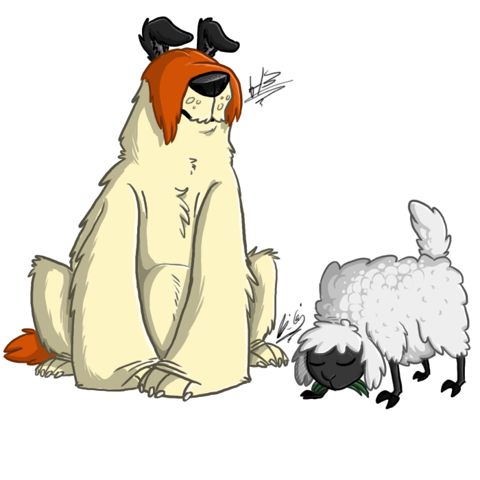
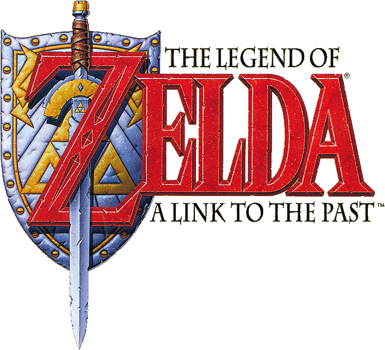
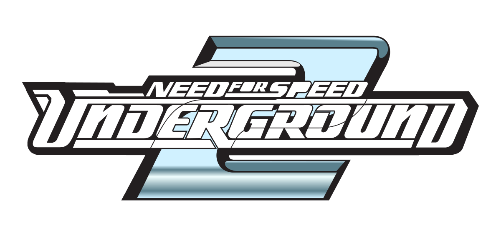
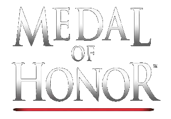

 Looney Tunes: Perro & Lobo, conocido en inglés como Sheep Raider en Norteamérica y Sheep Dog N' Wolf en Europa, es un videojuego de puzzle-plataformas / estrategia lanzado para PlayStation y Microsoft Windows, lanzado el 14 de septiembre de 2001. Este juego está basado en la popular serie de Warner Bros. "El perro ovejero Sam" y "Ralph Wolf". Controlas a Ralph durante todo el juego, el objetivo del jugador es robar las ovejas del perro ovejero Sam a través de muchos niveles, incluyendo 2 secretos y un nivel bonus. Historia Después de otro intento fallido de robar una oveja al perro ovejero Sam, Ralph Wolf entra a su cabaña para relajarse y ver televisión. El Pato Lucas irrumpe en su casa y le da a Ralph la noticia de que es el nuevo concursante del programa "Perro Ovejero y Lobo" conducido por el mismo (o, como le gusta llamarlo: ¿Quién quiere ser un ladrón de corderos?) Lucas lleva a Ralph en su limosina hasta Ciudad Acme, donde le "explica", las reglas del juego y lo que debe hacer. Ralph se entera de que será proveído de diversos objetos marca Acme, inventario, y guías de usuario para inventar planes para robar las ovejas de Sam. Los niveles están claramente representados como escenarios en las series de Looney Tunes, desde los más clásicos desiertos calurosos hasta escenarios totalmente nuevos, como la tierra fantasmal. En uno de los últimos niveles, uno de los círculos de la Meta (donde se debe poner la oveja) está pintado en una vela de un barco. Ralph tira la oveja con un cañón y la manda a través de la tela, consiguiendo el punto. Marvin el Marciano rompe el techo del estudio, se baja de su nave, y le empieza a recriminar a Ralph que una oveja negra llegó hasta el planeta X y destruyó su depósito de marcianos instantáneos concentrados en líquido, por lo que su ejército se esparce. Es responsabilidad ahora de Ralph arreglar los daños. Marvin lleva a Ralph a su planeta para resolver este problema. Este nivel es el nivel final, o nivel bonus. Una vez que ha finalizado el último nivel, Ralph despierta en su casa, todo lo ocurrido en el videojuego fue un sueño.
 Legend of Zelda [a] es una franquicia de videojuegos de acción y aventuras creada por los diseñadores de juegos japoneses Shigeru Miyamoto y Takashi Tezuka. Es principalmente desarrollado y publicado por Nintendo, aunque algunas entregas portátiles y relanzamientos se han subcontratado a Capcom, Vanpool y Grezzo. El juego incorpora acción-aventura y elementos de juegos de rol de acción. La serie se centra en las diversas encarnaciones de Link; un joven valiente, con orejas puntiagudas como de elfo y la princesa Zelda; la reencarnación mortal de la diosa Hylia. Aunque sus orígenes y su trasfondo difieren de un juego a otro, a menudo se le asigna a Link la tarea de rescatar el reino de Hyrule de Ganon, un malvado señor de la guerra convertido en demonio que es el principal antagonista de la serie; sin embargo, han aparecido otros escenarios y antagonistas en varios juegos. Las tramas comúnmente involucran a la Trifuerza, una reliquia sagrada que dejaron las diosas que crearon Hyrule; Din, Farore y Nayru, que representan las virtudes de Coraje, Sabiduría y Poder que cuando se combinan son omnipotentes. Desde que se lanzó Legend of Zelda original en 1986, la serie se ha expandido para incluir 19 entradas en todas las principales consolas de juegos de Nintendo, así como una serie de spin-offs. Una serie de televisión animada estadounidense basada en los juegos emitidos en 1989 y adaptaciones de manga individuales encargadas por Nintendo se han producido en Japón desde 1997. The Legend of Zelda es una de las franquicias más destacadas y exitosas de Nintendo; varias de sus entradas están consideradas entre los mejores videojuegos de todos los tiempos.
 Need for Speed: Underground 2 es un videojuego de carreras publicado por Electronic Arts y desarrollado por EA Black Box. Lanzado en 2004, es la secuela de Need for Speed: Underground, formando parte de la serie Need for Speed, disponible en Nintendo GameCube, PlayStation 2, Xbox, Nintendo DS, Game Boy Advance y Microsoft Windows. La historia se basa en el tuneo de coches para las carreras callejeras. Need for Speed: Underground 2 proporciona nuevas características, como una mayor personalización de los vehículos, el modo "libre" (donde conduces el coche de manera libre por el mapa), en una ciudad conocida como "Bayview", ciudad que posee parecidos con las ciudades de Los Ángeles, Las Vegas y Houston. Este juego también permite la inclusión de los SUV, que pueden ser personalizados de forma extensiva como los demás vehículos y son usados en carreras contra otros vehículos de este tipo. Brooke Burke hace la voz de Rachel Teller, la persona que te guía a lo largo de la historia. Underground 2 es considerado como una de las mejores entregas de la saga Need For Speed. El juego tiene muy buenos gráficos y sigue teniendo, y el jugador puede elegir entre uno de los tonos musicales, reproducirlo y escucharlo además ofrece opciones para aplicar esa música en las carreras o en el menú principal, o simplemente en todos los modos así se escucha en el menú principal y en las carreras. El equivalente de Need for Speed: Underground 2 en la PSP es Need for Speed: Underground Rivals.
 Medal of Honor (en español: «Medalla de Honor») es una serie de videojuegos creada y producida por Steven Spielberg. La temática de la serie siempre ha estado basada en los combates de la Segunda Guerra Mundial, tema de culto para Spielberg (este cumplió su sueño de recrear la Segunda Guerra Mundial con la película Saving Private Ryan y con Medal of Honor, que fueron concebidos casi al mismo tiempo). No obstante, en 2010 la serie abandona la ambientación en la Segunda Guerra Mundial para trasladarse a un conflicto bélico en Afganistán. Medal of Honor (2010). Tematica : La forma de juego siempre ha sido la de la primera persona, con vehículos reales de la época y luchando contra las fuerzas del Eje. Desde el primer Medal of Honor, la acción ha sido aumentada gradualmente: en el primer juego el sigilo y la estrategia eran más importantes que aquella, mientras que en la actualidad ocurre lo contrario; el jugador ya no tendrá necesidad de agazaparse ni de ser sigiloso para abatir a un enemigo. Los enemigos abarcan todos los ejércitos del Eje, desde la Wehrmacht, pasando por los italianos hasta el Ejército Imperial del Japón. Además, existen diversas secuencias y escenarios comunes tanto a Saving Private Ryan como a Medal of Honor, en especial el desembarco aliado en Normandía, que se desarrolla de forma idéntica en la película y en el videojuego.
Desarrollador= Santiago Herbes